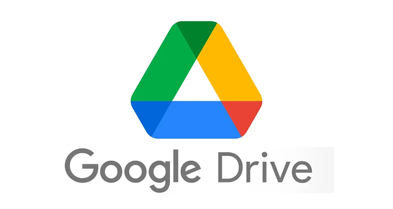
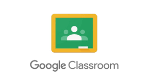

2010
Programa Nacional Conectar Igualdad. Generar oportunidades en el ámbito educativo para brindar igualdad a todas las instituciones educativas en torno a las TIC. Instagram es lanzado.
2011
El Ministerio de Educación de la Nación a través del Programa de Voluntariado Universitario convoca a facultades y estudiantes de Universidades Nacionales para la presentación de proyectos de Conectar igualdad. Google+ es lanzado y cerrado más tarde en 2019.
2012
Lanzamiento de Google Drive: un servicio de alojamiento de archivos que fue introducido en google el cual tuvo utilidad en toda mi estancia como universitario.
2013
Creé una cuenta personal de Facebook, agregando a mis amigos y familiares más cercanos.
2014
La plataforma de Classroom fue lanzada, originalmente formaba parte y estaba disponible únicamente para los centros educativos que tenían contratado el paquete Google Suite.
2015
Google anuncia que la movilidad es un factor importante en su algoritmo de búsqueda.